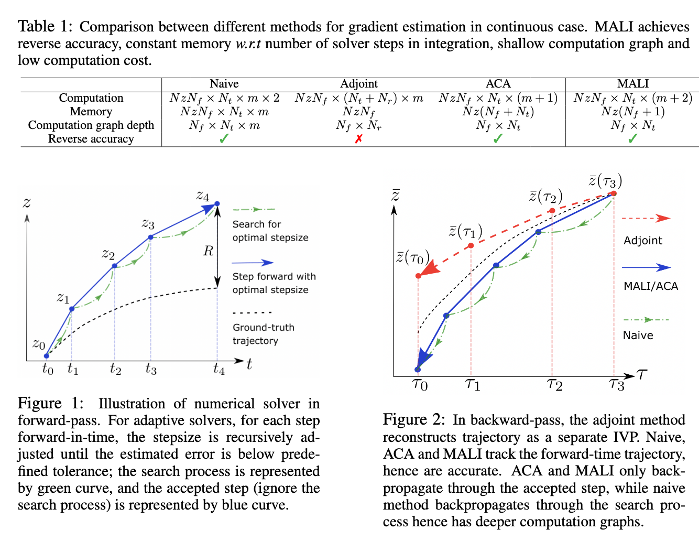
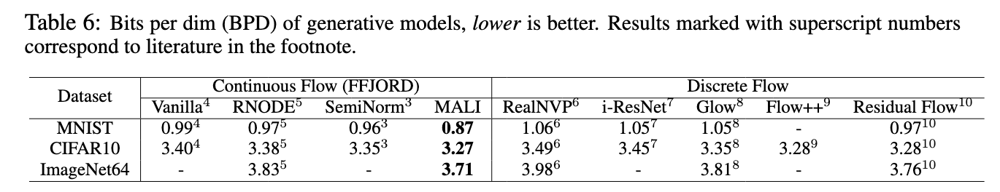
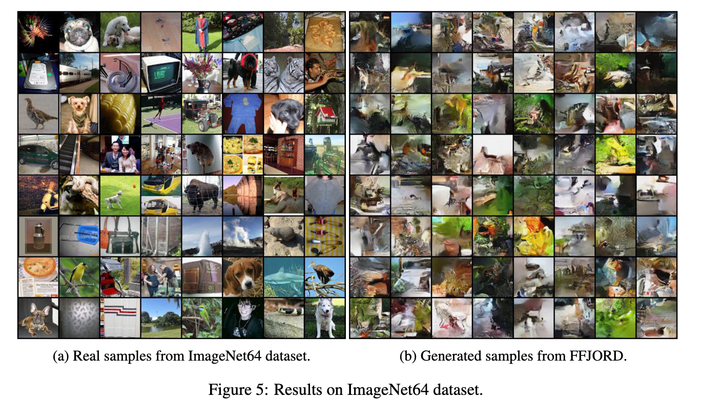
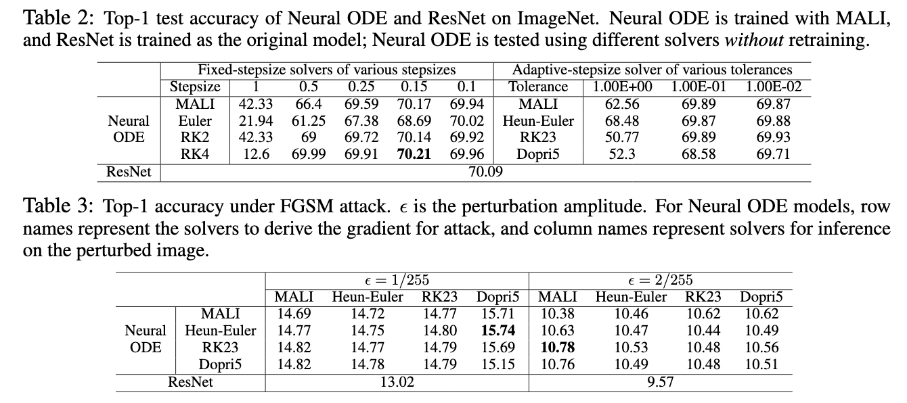

Abstract
Neural ordinary differential equations (Neural ODEs) are a new family of deep-learning models with continuous depth.
However, the numerical estimation of the gradient in the continuous case is not well solved: existing implementations of
the adjoint method suffer from inaccuracy in reverse-time trajectory, while the naive method and the adaptive checkpoint
adjoint method (ACA) have a memory cost that grows with integration time. In this project, based on the asynchronous
leapfrog (ALF) solver, we propose the Memory-efficient ALF Integrator (MALI), which has a constant memory cost
\textit{w.r.t} number of solver steps in integration similar to the adjoint method, and guarantees accuracy in
reverse-time trajectory (hence accuracy in gradient estimation). We validate MALI in various tasks: on image
recognition tasks, to our knowledge, MALI is the first to enable feasible training of a Neural ODE on ImageNet and
outperform a well-tuned ResNet, while existing methods fail due to either heavy memory burden or inaccuracy;
for time series modeling, MALI significantly outperforms the adjoint method; and for continuous generative models,
MALI achieves new state-of-the-art performance.
Algorithm

MALI is based on the Asynchronous LeapFrog Integrator (ALF). ALF is a generic ODE solver for ODEs, and it defines a
numerically accurate mapping between the initial condition and integrated value at end time. MALI takes advantage of the
invertibility of ALF; since every step is invertible, we can delete intermediate states to achieve a constant memory cost;
the invertibility guarantees the reverse-time trajectory exactly matches the forward-time trajectory in the adjoint-state
equation, hence it can accurately derive the gradient in the continuous case. To sum up, MALI has both advantages of the
adjoint method by Chen et al. and adaptive checkpoint adjoint method: MALI is numerically reverse-accurate, and has a constant
memory cost w.r.t. integration time.
Continuous generative models


MALI is also applicable to FFJORD, and achieves new state-of-the-art performance for continuous generative models WITHOUT
modifying the model structure. The only difference is in the ODE solver.
Image recognition on ImageNet

To our knowledge, MALI is the first ODE solver to enable efficient training of CNN-ODEs on large-scale dataset such as
ImageNet. Other methods are not applicable to complicated systems for various reasons: the adjoint method suffer from
inaccuracy in gradient estimation, because it forgets the forward-time trajectory, and the reconstructed reverse-time trajectory
cannot match forward-time trajectory exactly; the naive method has a huge memory cost, because it records all computations in
the memory. MALI achieves reverse accuracy at a constant memory cost, and is suitable for large-scale tasks.